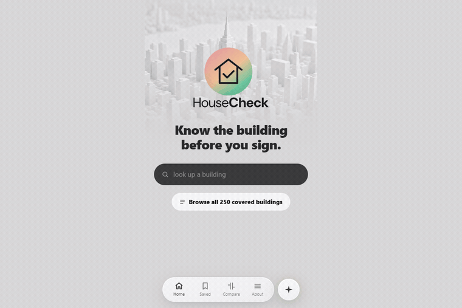
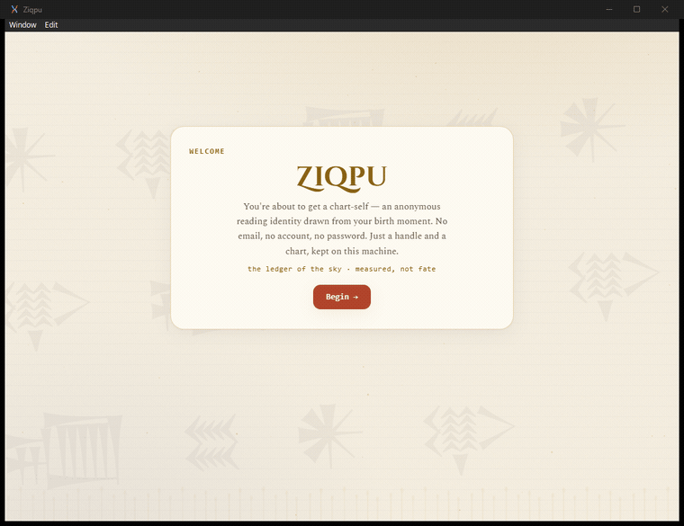
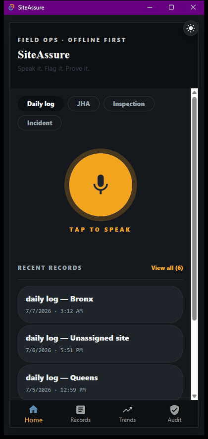
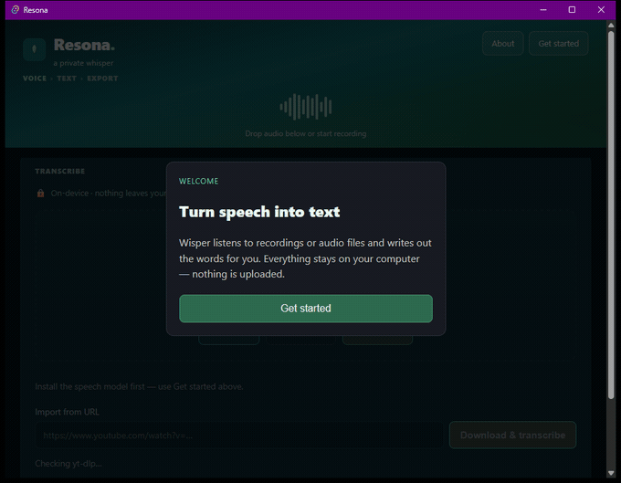

Pursuit AI-Native Builder · Inaugural cohort
Every one runs. Two are live on the internet right now; two are desktop applications you compile and launch.
Carfax for NYC apartments. Type an address, get a Building Health Card scored from public city data — and export a record a stranger can cryptographically verify.

A consumer astrology decision tool with two visible agents — one measures, one interprets. The separation is the integrity guarantee, enforced by architecture rather than disclaimer.

A tamper-evident, offline-first OSHA compliance logger driven by voice. Every create, amend and delete is chained and hash-verified — nothing is silently altered or removed.

Privacy-first voice-to-text. 100% on-device via whisper.cpp — a property you can verify by unplugging the network and watching it keep working.

A tenant lawyer can read a building's violations on any city website. What they cannot do is put that reading in front of a court, because a printout is unverifiable. HouseCheck's export carries an append-only hash chain and an Ed25519 signature, so opposing counsel can re-check it offline — without trusting us and without reaching our servers.
The part I am prouder of than the cryptography: while verifying it in production I
wrote an independent verifier in another language, and found that signing alone was not enough. A forger who rewrites a row, recomputes the whole chain and signs it with their
own keypair produces a document that verifies as intact — because it is internally
consistent. A row rewritten to NO VIOLATIONS OF ANY KIND AT THIS ADDRESS passed cleanly.
The fix was publishing the public key at a stable endpoint, so a reader has something to compare against. That hole existed because the code's own comment said “compare with the published one” while nothing published it.
HouseCheck signs a document a court might rely on. SiteAssure keeps a safety log that has to stay tamper-evident. Resona promises that audio never leaves the machine. In each case the product's whole claim is a guarantee about what the program will not do — and a guarantee is easier to hold when the compiler is checking it than when a test suite is remembering to.
The practical payoff is boring and real: a read-only SQLite artefact baked into a
container with no database server and no connection pool; a desktop app that ships one binary; 149 tests and clippy-clean on the current build, with correctness bugs re-measured across the whole dataset
rather than spot-checked. This page is the smallest example: its four card themes
are Rust values, and a const assertion refuses to compile any theme whose text falls below WCAG 4.5:1 on its
own background.
Figures in these repos are measured and say so. Anything derived is labelled derived; anything unverified says unverified. HouseCheck's backlog carries the rule in writing: an item with no reason is a wish, not a task.
Nearly every real defect I found in the final week was invisible from inside the editor — a search box that answered a Manhattan address with a Brooklyn building, a failed lookup that silently kept the previous result on screen, an assistant that answered a different question than the one asked.
Repeatedly the honest design has three states rather than two: signed / unsigned-but-intact / tampered. A repair-time median / “nothing has been closed” / genuinely no data. Collapsing the middle state is how software ends up stating something reassuring it has not earned.